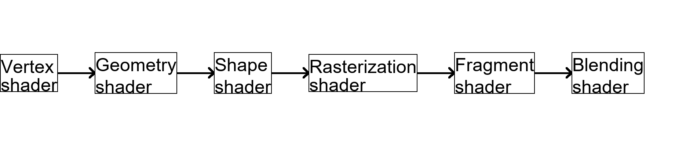
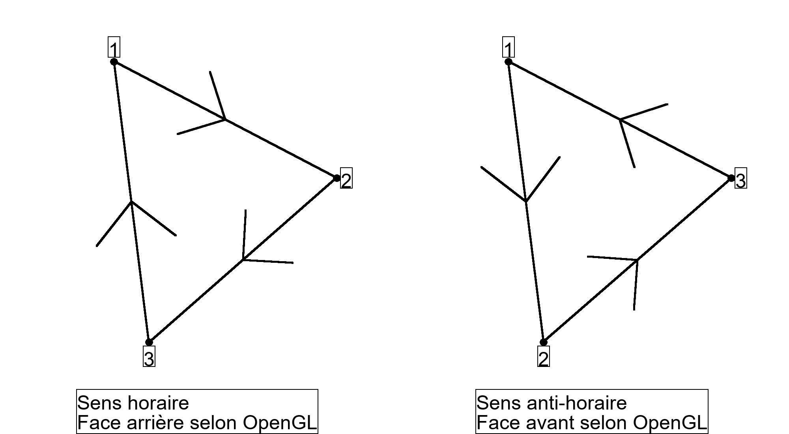

Utiliser OpenGL
Après notre cours sur le Raycast, nous avons précisé que cette technologie était vieille et démodée. Cependant, qu'elle technologie doit on utiliser pour faire le rendu de 3D sur ordinateur ? Une des technologies les plus utilisées est OpenGL. Sur cette page, nous ne ferons pas de programmation, mais que de la théorie. Une programmation en C++ sera disponible dans les temps à venir, avec les autres cours de C++. Il est aussi possible de l'utiliser avec Python, Java...Comment fonctionne OpenGL ?
Qu'est ce qu'est OpenGL ?
Après l'arrivée des premiers jeux 3D grâce au Raycast, les limites de cette technologie ont rapidement était atteintes. Pour y remédier, en 1992, l'entreprise Silicon Graphics a lancé un ensembles de méthodes de rendus 3D, réunies sous le nom d'OpenGL. Pour des raisons de simplicité, cette libraire est toujours restée très ouverte, que ce soit dans l'apprentissage (avec des sites comme LearnOpenGL) ou dans les ressources. Les droits d'OpenGL sont détenus par le consortium Khronos. Aujourd'hui, il existe pleins de versions d'OpenGL, de là 1.5 à la 4.6. Une version mobile existe aussi : OpenGL ES. Depuis 2016, les nouvelles versions d'OpenGL portent le nom de Vulkan. Sur cette page, nous allons étudier la version d'OpenGL la plus répendue : OpenGL 3.3.
Pour programmer en OpenGL, il existe beaucoup de moyens différents selon le language. En C++, au moins deux librairies sont nécessaires : GLFW et GLAD. En Python, la librairie PyOpenGL peut suffire. En Java, vous pouvez utiliser la même librairie que celle utilisée dans Minecraft : LWJGL. Il est aussi assez conseillé de coupler ces librairies avec des librairies permettant de gérer les mathématiques nécessaires au rendu 3D, comme GLM. Beaucoup de possibilités s'offrent à vous.
Cependant, les étapes précises à suivre pour utiliser OpenGL dépendent du language utilisé (bien que les concepts restent les mêmes). Quelque soit le language, vous devez définir une passerelle vers OpenGL dans votre programme, nommé un contexte OpenGL. Vous pouvez aussi lui passer différents paramètres, pour moduler votre programme OpenGL (taille de la fenêtre, titre de la fenêtre...). Dés que ce contexte est crée, pour l'utiliser, vous aurez besoin d'une boucle qui tournera jusqu'à ce que le programme ferme. Dans cette boucle, vous devrez spécifier à OpenGL que le rendu doit être effectué (via différentes fonctions, dépendantes du language). La gestion de cette boucle dépent de l'utilisation que vous devez en faire.

Les VBOs
Quelque soit l'objet que vous voulez afficher, OpenGL à besoin de connaître toutes les données nécessaires à propos de lui (forme, couleur...). Parmi ces données, certaines ne changeront jamais (ou très rarement), mais on besoin d'être rapidement accessible (comme la forme de l'objet). Pour cela, vous devez spécifier dans la mémoire d'OpenGL leur forme, via ce que l'on appelle des VBOs. Les VBO, pour "Vertex Buffer Object", sont des objets stockés en mémoire et utiliser directement pour le rendu. Comme tous objets mémoires bas-niveau, ils ne sont composés que de nombres (1-octet, 2-octets, 8-octets...). Cependant, vous pouvez gérer le traitement de ces objets, grâce un programme nommé un shader.
Les shaders
Les programmes exécutés par OpenGL pour effectuer les rendus se nomment les shaders. Ces programmes utilisent de très complexes architectures matérielles dans la carte graphique pour s'exécuter rapidement. Ils sont au nombre de 6. Chaque shader prend des données du shader précedent, et en envoie au prochain shader. Dans le cas du premier shader, les données viennent d'un VBO spécifique (spécifié dans le code du programme). Dans le cas du dernier shader, la donnée renvoyée est l'image finale.
Le premier shader est nommé le "vertex shader". Il doit entièrement être fait par le développeur. Ce shader a directement accés aux données du VBOs, selon une méthode de découpe de ces données précisée dans le shader. En fait, ce shader a pour tâche de passer précisément à OpenGL les points à afficher dans le bon ordre (et d'autres informations utiles si nécessaire) et avec la bonne position sur l'écran. En général, il formate juste les données présentes dans le VBO utilisé. Dans le cas de l'ordre des points de la forme, l'ordre nécessaire des points est la traingulation de la forme à afficher. En effet, les formes complexes doivent être coupées en triangles pour être représentées. De plus, il est grandement conseillé de proprement définir quel partie de la face est la partie avant est quelle partie de la face est la partie arrière. Effectivement, selon la façon dont vous regarder la forme, vous pouvez voir les points : soit dans le sens des aiguilles d'une montre, soit dans l'autre sens. Pour OpenGL, la face est vue de par l'avant quand les points sont vus dans le sens inverse de l'aiguille d'une montre, faites y bien attention en ordonnant vos points. Pour des raisons de simplicité, il est fortement conseillé de gérer l'ordre directement dans le VBO.
L'autre opération du "vertex shader" est l'adaptation de la position des points. Ce contexte là peut changer pendant le programme (par exemple, si la caméra se déplace), et nécessite donc une modification à chaque rendu. Pour cela, il faut utiliser des mathématiques, et, pour être plus précis, du calcul vectoriel et matriciel. La première étape est de calculer précisément l'état de l'objet dans le programme : rotation, taille, position... L'avatange du calcul matriciel est que l'on peut faire tout ça via la multiplication d'une seule matrice 4*4 M avec un vecteur 4 P contenant la position de l'objet, possiblement obtenue via le VBO (et 1 en dernière valeur). Pour obtenir M, il faut y appliquer la position de l'objet, puis sa rotation, puis sa taille. La démonstration mathématique de tout ça étant assez complexe, elle ne sera pas abordée ici. Faites attention, les matrices ne sont pas commutatives, donc M * P n'est pas égal à P * M, et nous avons ici besoin de M * P. Dés que tout cela est fait, vous obtenez une matrice, auquelle il faut y appliquer les données de la caméra. Le calcul étant très complexe, il vaut mieux utiliser une fonction conçu à cette effet, dans la librairie OpenGL. Dans le cas du C++, la librairie GLM offre une fonction "look_at", qui vous retourne une matrice C permettant l'application directe des calculs nécessaires. Vous aurez juste à lui fournir les coordonnées de la caméra et son vecteur "haut" et "avant". Vous pourrez ensuite multiplier cette matrice par la matrice déjà calculée plus haut, pour obtenir la matrice nécessaire au monde 3D. Pour finir, il faut réaliser un autre calcul : la projection de la matrice caméra sur un écran 2D, via une autre matrice J. Comme pour la caméra, il vaut mieux utiliser une fonction pré-conçu, comme "perspective" de GLM. Elle demande le FOV de la caméra en radians, le ratio de la fenêtre OpenGL, et deux distances représentant les limites de rendu "trop proche" et "trop loin". Au final, le calcul dans le "vertex shader" doit être J * C * M * P, donnant une matrice qui sera utilisée par OpenGL.
Les deux prochains shaders sont le "geometry shader" et le "shape shader". Le "geometry shader" s'occupe de présenter à OpenGL la façon dont les triangle doivent géométriquement se présenter. Ce shader peut être modifié par l'utilisateur, mais ce n'est pas obligé (et généralement peu utilisé pour un débutant). Dés que tout ceci est fait, d'autres calculs géométriques plus spécifiques seront réalisés dans le "shape shader". Ce shader ne peut pas être modifié par l'utilisateur. Grâce à ces deux shaders, nous pouvons passer les résultats au shader qui va s'occuper de préparer le traçage de la forme : le "rasterization shader". Pour être précis, ce shader va générer les pixels nécessaires au traçage, pour les passer au prochain shader.
Le prochain shader, le "fragment shader", va avoir la tâche d'attribuer une couleur à chaque pixels renvoyé par le "rasterization shader". Pour cela, il a besoin d'être écrit par l'utilisateur. Pour utiliser proprement ce shader, l'utilisateur peut avoir accés à certaines données d'OpenGL (comme la position sur l'écran), mais aussi des valeurs passées par le "vertex shader". C'est dans ce shader que peut se passer pleins de choses, comme l'application des textures, le rendu de la lumière, application de masques... Dés que ceci est fait, le résultat est passé au prochain shader, le "blending shader", qui va coller ce résultat sur l'image final. Après tout ça, le rendu du VBO est terminé.
Il nous reste un petit détail à explorer. En effet, certains shaders peuvent être passés par l'utilisateur, cependant comment doit-il faire ? En fait, les shaders sont des programmes écrits dans un langage, le GLSL, et passés directement à la carte graphique. Le passage vers la carte graphique est, en général, possible via votre librairie OpenGL. Le GLSL est un langage proche du C. Voici un exemple de GLSL pour un "vertex shader" :
Voici un exemple de GLSL pour un "fragment shader" :
Plus de détail dans le maniement des shaders seront donnés dans la prochaine partie de cette page. Si vous voulez vous entrainer à pratiquer des shaders, vous pouvez vous rendre sur le site ShaderToy, un bas à sable assez amusant pour pratiquer le GLSL.
Les VAOs
Pour en finir avec les bases, parlons des VAOs. Pour tracer une forme, il vous faut lier un VBO avec un ensemble de shaders, via ce que l'on appelle un VAO. Disons le, les VAOs ne sont vraiment utiles que dans le code, pour ne pas qu'OpenGL se perdent. Or, si vous voulez faire des traçage plus complexes que des formes (comme des bordures de formes ou des géométries avancées), il vous faudra utiliser les bonnes catégories de VAOs, prévues à cet effet. Donc, ne les oubliez surtout pas dans votre code, pour ne pas créer de comportements imprévus. En général, l'appel aux shaders pour effectuer un rendu se fait dans le code via ces VAOs.
Appliquer les concepts standards
Dans toutes créations 3D modernes, il y a bien évidemment plus de fonctionnalités, et pas juste quelques formes unicolore. Nous allons approfondir certains concepts OpenGL, juste ici.
Appliquer une texture
Les textures unicolores sont particulièrement atroces à regarder. Pour y remédier, vous pouvez passer une texture à l'objet, en ne changeant que le "fragment shader" et un peu le "vertex shader". La première modification à passer est la façon dont la texture doit être appliquée sur la forme. En effet, une texture sera (dans ce cas là) en 2D, avec la position (0, 0) en bas à gauche et (1, 1) en haut à droite dans le cas d'OpenGL. Or, le shader a besoin de savoir quelle point de la forme représente quelle coordonnées sur la texture. Pour cela, il est donc conseillé de passer cette coordonnée pour chaque point, dans le VBO, avec la coordonnée principale. Une légère modification du vertex shader (et donc, du VBO) est donc nécessaire avec l'ajout de cette coordonnée :
void main() { // Assignement de la bonne valeur à la donnée à passer texture_position = pos_texture; // Calcul du point retourné par le shader gl_Position = project * view * model * vec4(pos.xyz, 1.0); }
Si l'envie vous prend, vous pouvez aussi modifier sa valeur dans le "vertex shader", pour créer par exemple un effet d'hypnose. Les possibilités sont infinies ! Ne vous inquiétez pas, lors du shader de rasterization, OpenGL va modifier la donnée selon le pixel visé, pour qu'il est la coordonnée texture nécessaire.
Dés que cela est fait, il va falloir s'attaquer au "fragment shader". Premièrement, il va falloir l'adapter pour recevoir cette nouvelle variable "position_texture". En suite, nous allons lui ajouter la possibilité d'étudier une texture, avec une variable "uniform". OpenGL s'occupera de dimensionner l'image entre (0, 0) et (1, 1). Cette même texture doit être chargé via le code du programme, et peut avoir pleins de configurations différentes. Par exemple, vous pouvez lui passer son comportement à très petite distance, à très longue distance, en spécifiant comment l'afficher et même comment gagner de la mémoire avec, grâce au système de mipmaps. Cependant, tout cela n'est que secondaire. Pour finir, il va falloir assigner au bon pixel généré sa couleur équivalent sur la texture. GLSL offre un outil pour cela : la fonction "texture". Après modification, voici à quoi devrait ressembler le "fragment shader" :
Cependant, comme le (0, 0) d'une texture OpenGL représente le bas et que le (0, 0) d'une image représente généralement le haut, il peut être nécessaire d'inverser l'image avant de la passer à OpenGL. Comme pour le "vertex shader", vous pouvez modifier ce code comme bon vous semble, pour faire le rendu de ce que vous voulez, comme un ensemble de Mandelbrot.